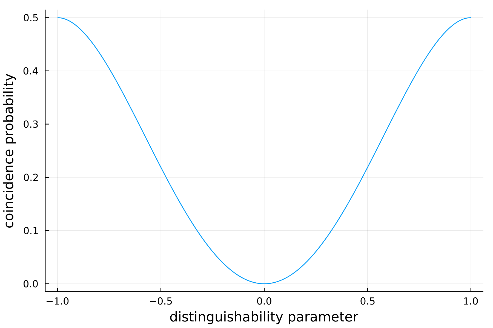

Computing the photon counting statistics
Given n photons among m modes, one can build several configurations. All of those possible arrangements can be retrieved by using output_mode_occupation
julia> n = 2;
julia> m = 2;
julia> output_mode_occupation(n,m)
4-element Vector{Any}:
[1, 1]
[1, 2]
[2, 1]
[2, 2]giving a vector of the possible mode assignment lists. We propose here some functions that generate all the associated probabilities to end up in one of such configuration from an Input and an Interferometer. In the following, each generated probability distribution is indexed as output_mode_occupation, that is, p[i] gives the probability to obtain the outcome output_mode_occupation[i].
Theoretical distribution
We propose here to see the effect of partial distinguishability through the so-called Hong-Ou-Mandel effect. It is common in the literature to use the time delay $\Delta \tau$ between the two beams as a source of partial distinguishability in this in this context. While the distinguishability parameter itself is $\Delta \omega \Delta \tau$ with $\Delta \omega$ the uncertainty of the frequency distribution. In order to make the parallel with our OneParameterInterpolation model, we substitute the linear parameter $x$ by $1-x^2$. In this way, a Distinguishable is recovered for $\Delta \omega \Delta \tau \rightarrow 0$. Notice that contrary to the time delay, the interpolation parameter $x$ is bounded because of the normalisation constraint.
As in the original HOM effect, we consider here two particles initially placed on two different modes interfering through a balanced BeamSplitter. From several partially distinguishable inputs created from the OneParameterInterpolation model, finally, we compute the coincidence probability (that is the probability to observe [1,2] and [2,1] at the output) thanks to theoretical_distribution.
julia> n = 2; # photon number
julia> m = 2; # mode number
julia> B = BeamSplitter(1/sqrt(2));
julia> p_coinc = Vector{Float64}(undef, 0);
julia> x_ = Vector{Float64}(undef, 0);
julia> for x = -1:0.01:1
local input = Input{OneParameterInterpolation}(first_modes(n,m), 1-x^2)
p_theo = theoretical_distribution(input=input, interf=B)
push!(p_coinc, p_theo[2] + p_theo[3])
push!(x_, x)
endWhere we have stored the coincidence probabilities in p_coinc. By plotting the latter we recover the dip translating the well known two-particle interference effect when considering a Bosonic input:

Noisy distribution
As for noisy_sampler, we sometimes want to take into account imperfections in the experimental realisation of a circuit. One can use noisy_distribution to compute the probabilities to end up in each configuration given by output_mode_occupation from a defined input when using a lossy interferometer
julia> n = 3;
julia> m = 5;
julia> distinguishability_param = 0.7;
julia> my_reflectivity = 0.7;
julia> my_input = Input{OneParameterInterpolation}(first_modes(n,m), distinguishability_param);
julia> my_interf = RandHaar(m);
julia> res = noisy_distribution(input=my_input, interf=my_interf, reflectivity=my_reflectivity)
3-element Vector{Any}:
[0.030092342701336063, 0.009174672025065295, 0.012301444632816206, 0.008261320762511275, 0.00825343245181492, 0.009174672025065295, 0.0015318257468957183, 0.007037230327501444, 0.0034542128581951815, 0.0032779849423985887 … 0.01245307508063033, 0.00543392525722553, 0.010053183825728736, 0.013575124678493963, 0.011494371794022762, 0.009403036769288563, 0.009156238120536536, 0.015161445820062795, 0.011494371794022764, 0.04819898039534371]
[0.023551358197813715, 0.008260895456533175, 0.012221654757509451, 0.012336452058889868, 0.011712852102797554, 0.008260895456533173, 0.0013590732227078874, 0.007212741596498194, 0.0036595492225577186, 0.003983666401759253 … 0.00382520988349487, 0.004571718465896123, 0.009290013877211057, 0.018492288077608613, 0.016830450331890665, 0.01355520468409837, 0.009082179316484165, 0.016223969372706714, 0.016830450331890665, 0.03772226919407445]
[0.05140000000000507, 0.013849999999999604, 0.016499999999999498, 0.0007700000000000014, 0.0024400000000000055, 0.014479999999999578, 0.0023500000000000053, 0.008769999999999811, 0.0016500000000000037, 0.0005500000000000008 … 0.018739999999999406, 0.005969999999999925, 0.006519999999999903, 0.0058099999999999315, 0.0018300000000000041, 0.002200000000000005, 0.012819999999999646, 0.016089999999999514, 0.0017100000000000038, 0.08629999999999924]Notice that res is a three-component vector containing three probability distributions. In fact, noisy_distribution takes three additional arguments: exact, approx and samp. By default, those optional parameters are set to true meaning that we actually compute three distributions:
julia> p_exact = res[1];
julia> p_approx = res[2];
julia> p_samp = res[3];The first one is the noisy version of theoretical_distribution, the second distribution is computed such that the probabilities are truncated by neglecting the highest interference terms. The last distribution is computed thanks to a Metropolis sampler that samples from the exact distribution.

One can allow the computation of the sampled distribution only, by setting exact=false, approx=false when calling noisy_distribution.